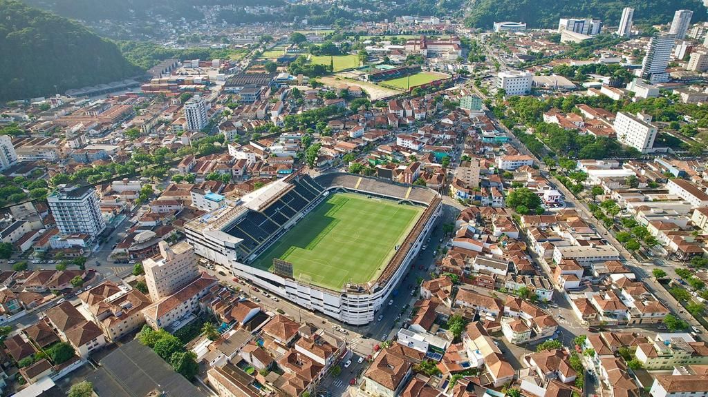

Historia
O Santos Futebol Clube foi fundado por iniciativa de três esportistas da cidade, Francisco Raymundo Marques, Mário Ferraz de Campos e Argemiro de Souza Júnior. Eles convidaram a todos os interessados para participar da reunião inaugural do novo clube, que foi constituído para ser destinado a prática do futebol, que no começo do século passado estava engatinhando no Brasil. A reunião histórica aconteceu na tarde do domingo, 14 de abril de 1912, na sede do Clube Concórdia, na antiga rua do Rosário, 18 (hoje rua João Pessoa, 8/10). São considerados como sócios-fundadores todos os 39 participantes dessa reunião. No dia da fundação, o nome da entidade foi sugerido por Edmundo Jorge de Araújo: Santos Foot-Ball Club e as cores dos uniformes da nova agremiação, que seria presidida no primeiro ano de existência por Sizino Patusca, eram o azul e o branco, com fios dourados entre elas.
No dia 31 de março do ano seguinte as cores do Clube, por sugestão de Paulo Peluccio, passaram a ser calção branco e camisa listrada de branco e preto. O Conselho Deliberativo do Clube teve início no dia 28 de janeiro de 1932 e o primeiro presidente foi Flamínio Levy. No começo de sua gloriosa caminhada entra para a vida do clube, Urbano Vilella Caldeira Filho, um homem que dedicou toda a vida ao time que tanto amou até o falecimento, no ano de 1933. Urbano Caldeira foi atleta, técnico, dirigente e hoje é um dos patronos do Santos Futebol Clube. Em sua homenagem o nome do estádio que foi erguido, no ano de 1916, leva seu nome como reconhecimento de seu amor ao Alvinegro Praiano.
Primeiro Jogo Amistoso
Estadio
Antes da inauguração da sua Praça de Esportes na Vila Belmiro, o Santos treinava e realizava até algumas partidas em seu campo na rua Aguiar de Andrade, atual Manoel Tourinho, entre as ruas Lowndes e Emílio Ribas, no Macuco, mas sem as dimensões e acomodações necessárias, a questão do campo passou a caráter de urgência. A primeira manifestação formal da necessidade de construção de um campo foi feita pelo presidente Agnello Cícero de Oliveira que, em reunião de diretoria no dia 14 de julho de 1915, expôs a “necessidade urgente da construção de um campo de football com todas as acomodações e instalações que se fazem precisar aos nossos jogadores e aos nossos apreciadores”. Para tratar de um assunto dessa magnitude, o presidente nomeou e solicitou a cooperação de uma comissão de sócios, que ficou responsável pela tarefa.
No início, a opção mais atraente era um terreno examinado por Urbano Caldeira em boas condições de edificar o campo esportivo, localizado no Campo Grande. Porém, em reunião de 14 de abril de 1916, coincidentemente o 4º aniversário do clube, Luiz Suplicy Junior comunicou à diretoria que a Companhia Construtora de Santos propunha fornecer um campo completo, vendendo-o em prestações mensais.Em assunto de tamanha importância como a aquisição de um patrimônio dessa relevância para os destinos do clube, todos os aspectos foram discutidos. A proposta da Companhia Santista de Habitações Econômicas e respectivo exame da planta do terreno se mostrou a mais viável.Portanto, em 10 de junho, o presidente fechou as negociações para compra de terreno com a Companhia Santista de Habitações Econômicas. A minuta foi lida e registrada em Ata no dia 23 de junho de 1916.
Vila Belmiro
A Inauguração
O campo do Santos, já não era sem tempo, estava prestes a ser inaugurado. Em reunião de diretoria de 11 de outubro, foi lido um ofício da Associação Paulista de Sports Athléticos (APSA), “nomeando comissão que examinará o ground deste club”. A mesma, em comum acordo com o clube, concordou com a transferência do jogo Ypiranga x Santos que deveria realizar-se no dia 12 para o dia 22 próximo.No dia festivo aconteceram várias partidas e brincadeiras entre os associados. Foi o adeus aos jogos nos campos situados nas avenidas Ana Costa e Conselheiro Nébias. Apenas o campo alugado pelo clube em 1912, na Vila Macuco, continuou sendo usado para os jogos da liga interna do clube até 1917.Em 12 de outubro, o Santos inaugurava a sua Praça de Esportes.